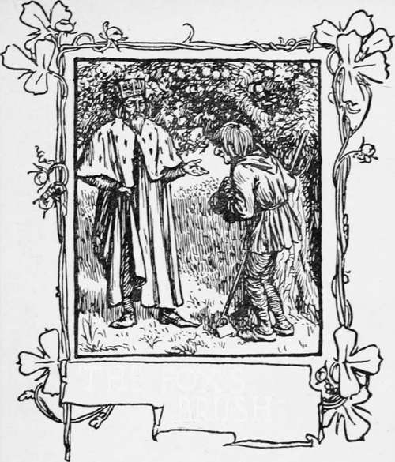

The Fox's Brush
Description
This section is from the book "Household Tales by Brothers Grimm", by Brothers Grimm. Also available from Amazon: Household Tales by Brothers Grimm.
The Fox's Brush
The King of the East had a beautiful garden, and in the garden stood a tree that bore golden apples. Lest any of these apples should be stolen, they were always counted ; but about the time when they began to grow ripe, it was found that every night one of them was gone. The king became very angry at this, and told the gardener to keep a watch under the tree all night.
The gardener set his eldest son to watch, but about twelve o'clock he fell asleep, and in the morning another of the apples was missing.
Then the second son was set to watch, and at midnight he too fell asleep, and in the morning another apple was gone.
Then the third son offered to keep watch: but the gardener at first would not let him, for fear some harm should come to him. However, at last he yielded, and the young man laid himself under the tree to watch. As the clock struck twelve he heard a rustling noise in the air, and a bird came flying and sat upon the tree. This bird's feathers were all of pure gold; and as it was snapping at one of the apples with its beak, the gardener's son jumped up and shot an arrow at it. The arrow, however, did the bird no harm, it only dropped a golden feather from its tail, and flew away. The golden feather was then brought to the king in the morning, and all his court were called together. Every one agreed that it was the most beautiful thing that had ever been seen, and that it was worth more than all the wealth of the kingdom: but the king said, " One feather is of no use to me, I must and will have the whole bird."
Then the gardener's eldest son set out to find this golden bird, and thought to find it very easily; and when he had gone but a little way, he came to a wood, and by the side of the wood he saw a fox sitting. The lad was fond of a little sporting, so he took his bow and made ready to shoot at it. Then Mr Reynard, who saw what he was about, and did not like the thought of being shot at, cried out, "Softly, softly! do not shoot me, I can give you good counsel. I know what your business is, and that you want to find the golden bird. You will reach a village in the evening, and when you get there you will see two inns, built one on each side of the street. The right-hand one is very pleasant and beautiful to look at, but go not in there. Rest for the night in the other, though it may seem to you very poor and mean." "What can such a beast as this know about the matter ?" thought the silly lad to himself. So he shot his arrow at the fox, but he missed it, and it only laughed at him, set up its tail above its back, and ran into the wood.
The young man went his way, and in the evening came to the village where the two inns were. In the right-hand one were people singing, and dancing, and feasting; but the other looked very dirty, and poor, "I should be very silly," said he, "if I went to that shabby house, and left this charming place:" so he went into the smart house, and ate and drank at his ease; and there he stayed, and forgot the bird and his country too.
Time passed on, and as the eldest son did not come back, and no tidings were heard of him, the second son set out, and the same thing happened to him. He met with the fox sitting by the roadside, who gave him the same good advice as he had given his brother: but when he came to the two inns, his eldest brother was standing at the window where the merry-making was, and called to him to come in; and he could not withstand the temptation, but went in, joined the merrymaking, and there forgot the golden bird and his country in the same manner.
Time passed on again, and the youngest son too wished to set out into the wide world, to seek for the golden bird; but his father would not listen to him for a long while, for he was very fond of his son, and was afraid that some ill-luck might happen to him also, and hinder his coming back. However, at last it was agreed he should go; for, to tell the truth, he would not rest at home. As he came to the wood he met the fox, who gave him the same good counsel that he had given the other brothers. But he was thankful to the fox, and did not shoot at him, as his brothers had done. Then the fox said, "Sit upon my tail, and you will travel faster." So he sat down: and the fox began to run, and away they went over stock and stone, so quickly that their hair whistled in the wind.
When they came to the village, the young man was wise enough to follow the fox's counsel, and, without looking about him, went straight to the shabby inn, and rested there all night at his ease. In the morning came the fox again, and met him as he was beginning his journey, and said, "Go straight forward till you come to a castle, before which lie a whole troop of soldiers fast asleep and snoring; take no notice of them, but go into the castle, and pass on and on till you come to a room where the golden bird sits in a wooden cage: close by it stands a beautiful golden cage; but do not try to take the bird out of the shabby cage and put it into the handsome one, otherwise you will be sorry for it." Then the fox stretched out his brush again, and the young man sat himself down, and away they went over stock and stone, till their hair whistled in the wind.
Before the castle gate all was as the fox had said : so the lad went in, and found the chamber, where the golden bird hung in a wooden cage. Below stood the golden cage; and the three golden apples, that had been lost, were lying close by its side. Then he thought to himself, " It will be a very droll thing to bring away such a fine bird in this shabby cage ; " so he opened the door and took hold of the bird, and put it into the golden cage. But it set up at once such a loud scream, that all the soldiers awoke; and they took him prisoner, and carried him before the king.
The next morning the court sat to judge him; and when all was heard, it doomed him to die, unless he should bring the king the golden horse, that could run as swiftly as the wind. If he did this he was to have the golden bird given him for his own.
Continue to:
Tags
fairy tales, children's stories, brothers grimm, household tales